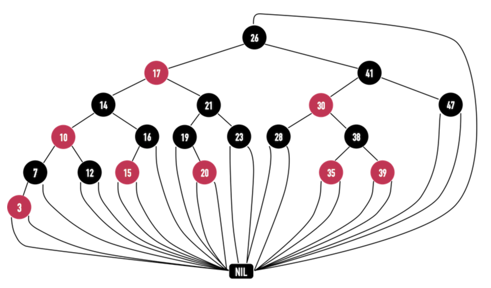
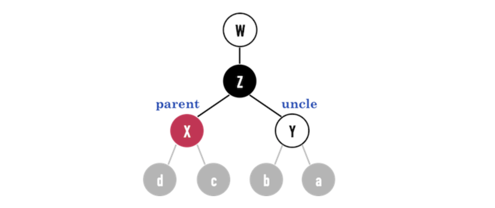
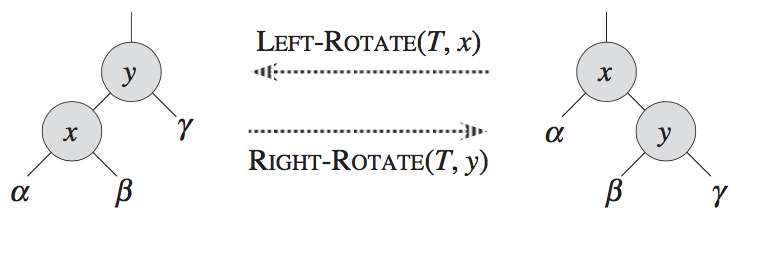

<!DOCTYPE html>
<html>
<head><meta name="generator" content="Hexo 3.8.0">
  <meta charset="utf-8">
  

  
  <title>Red Black Tree | Imoko</title>
  <meta name="viewport" content="width=device-width, initial-scale=1, maximum-scale=1">
  <meta name="description" content="定义： 1 二分查找树 2 每个node有一个额外的存储：color （红，黑） 3 root 是黑 4 原本在BST中指向NULL的pointer，在RBT中，全部指向了NIL,每个NIL是黑 5 如果一个node是红，它的孩子都是黑。 6 任意node开始，到NIL的所有路径中，包含了相同的黑node。  ###  Fix Up什麼情況需要對InsertRBT()做修正？ 當新增node接在紅">
<meta property="og:type" content="article">
<meta property="og:title" content="Red Black Tree">
<meta property="og:url" content="http://yoursite.com/2018/08/14/Black_Red_tree/index.html">
<meta property="og:site_name" content="Imoko">
<meta property="og:description" content="定义： 1 二分查找树 2 每个node有一个额外的存储：color （红，黑） 3 root 是黑 4 原本在BST中指向NULL的pointer，在RBT中，全部指向了NIL,每个NIL是黑 5 如果一个node是红，它的孩子都是黑。 6 任意node开始，到NIL的所有路径中，包含了相同的黑node。  ###  Fix Up什麼情況需要對InsertRBT()做修正？ 當新增node接在紅">
<meta property="og:locale" content="default">
<meta property="og:image" content="http://yoursite.com/2018/08/14/Black_Red_tree/image-20180820170413020.png">
<meta property="og:image" content="http://yoursite.com/2018/08/14/Black_Red_tree/image-20180820193242724.png">
<meta property="og:image" content="http://yoursite.com/2018/08/14/Black_Red_tree/image-20180815004944884.png">
<meta property="og:updated_time" content="2018-11-22T06:46:40.000Z">
<meta name="twitter:card" content="summary">
<meta name="twitter:title" content="Red Black Tree">
<meta name="twitter:description" content="定义： 1 二分查找树 2 每个node有一个额外的存储：color （红，黑） 3 root 是黑 4 原本在BST中指向NULL的pointer，在RBT中，全部指向了NIL,每个NIL是黑 5 如果一个node是红，它的孩子都是黑。 6 任意node开始，到NIL的所有路径中，包含了相同的黑node。  ###  Fix Up什麼情況需要對InsertRBT()做修正？ 當新增node接在紅">
<meta name="twitter:image" content="http://yoursite.com/2018/08/14/Black_Red_tree/image-20180820170413020.png">
  
    <link rel="alternate" href="/atom.xml" title="Imoko" type="application/atom+xml">
  
  
    <link rel="icon" href="/favicon.png">
  
  
    <link href="//fonts.googleapis.com/css?family=Source+Code+Pro" rel="stylesheet" type="text/css">
  
  <link rel="stylesheet" href="/css/style.css">
</head>
</html>
<body>
  <div id="container">
    <div id="wrap">
      <header id="header">
  <div id="banner"></div>
  <div id="header-outer" class="outer">
    <div id="header-title" class="inner">
      <h1 id="logo-wrap">
        <a href="/" id="logo">Imoko</a>
      </h1>
      
    </div>
    <div id="header-inner" class="inner">
      <nav id="main-nav">
        <a id="main-nav-toggle" class="nav-icon"></a>
        
          <a class="main-nav-link" href="/">Home</a>
        
          <a class="main-nav-link" href="/archives">Archives</a>
        
      </nav>
      <nav id="sub-nav">
        
          <a id="nav-rss-link" class="nav-icon" href="/atom.xml" title="RSS Feed"></a>
        
        <a id="nav-search-btn" class="nav-icon" title="Search"></a>
      </nav>
      <div id="search-form-wrap">
        <form action="//google.com/search" method="get" accept-charset="UTF-8" class="search-form"><input type="search" name="q" class="search-form-input" placeholder="Search"><button type="submit" class="search-form-submit">&#xF002;</button><input type="hidden" name="sitesearch" value="http://yoursite.com"></form>
      </div>
    </div>
  </div>
</header>
      <div class="outer">
        <section id="main"><article id="post-Black_Red_tree" class="article article-type-post" itemscope="" itemprop="blogPost">
  <div class="article-meta">
    <a href="/2018/08/14/Black_Red_tree/" class="article-date">
  <time datetime="2018-08-13T16:00:00.000Z" itemprop="datePublished">2018-08-14</time>
</a>
    
  </div>
  <div class="article-inner">
    
    
      <header class="article-header">
        
  
    <h1 class="article-title" itemprop="name">
      Red Black Tree
    </h1>
  

      </header>
    
    <div class="article-entry" itemprop="articleBody">
      
        <p>定义：</p>
<p>1 二分查找树</p>
<p>2 每个node有一个额外的存储：color （红，黑）</p>
<p>3 root 是黑</p>
<p>4 原本在BST中指向<code>NULL</code>的pointer，在RBT中，全部指向了<code>NIL</code>,每个<code>NIL</code>是黑</p>
<p>5 如果一个node是红，它的孩子都是黑。</p>
<p>6 任意node开始，到<code>NIL</code>的所有路径中，包含了相同的黑node。</p>
<p></p>
<p>### </p>
<h3 id="Fix-Up"><a href="#Fix-Up" class="headerlink" title="Fix Up"></a>Fix Up</h3><p>什麼情況需要對<code>InsertRBT()</code>做修正？ 當新增node接在紅色的node的<code>child pointer</code>，形成紅色與紅色相連時。</p>
<ul>
<li>node(X)為其<code>parent</code>，顏色為紅色；</li>
<li>node(Y)為其<code>uncle</code>，其顏色<strong>可能為紅色或黑色</strong>。</li>
<li>node(Z)為其grandparent，顏色必定為黑色(因為node(X)是紅色)</li>
</ul>
<h3 id=""><a href="#" class="headerlink" title=""></a></h3><p>### </p>
<p>根據<code>uncle</code>的顏色是紅色或者黑色，可以將修正(FixUp)分成三種情形(case)：</p>
<ol>
<li>Case1：<code>uncle</code>是紅色，不論新增的node是node(X)的<code>leftchild</code>或<code>rightchild</code>；</li>
<li>Case2：<code>uncle</code>是黑色，而且新增的node為node(X)的<code>rightchild</code>；</li>
<li>Case3：<code>uncle</code>是黑色，而且新增的node為node(X)的<code>leftchild</code>。</li>
</ol>
<h3 id="旋转（Rotation）"><a href="#旋转（Rotation）" class="headerlink" title="旋转（Rotation）"></a>旋转（Rotation）</h3><p>搜索树的操作：Tree-Insert 和 Tree-Delete，会改变树的结构，通过<strong>旋转</strong>进行恢复。</p>
<p></p>
<p>有左和右两种方式。</p>
<h3 id="插入（Insertion）"><a href="#插入（Insertion）" class="headerlink" title="插入（Insertion）"></a>插入（Insertion）</h3><p>We can insert a node into an n-node red-black tree in O(lg n) time.  </p>
<p>TODO</p>
<h3 id="参考"><a href="#参考" class="headerlink" title="参考"></a>参考</h3><p><a href="http://alrightchiu.github.io/SecondRound/red-black-tree-introjian-jie.html" target="_blank" rel="noopener">http://alrightchiu.github.io/SecondRound/red-black-tree-introjian-jie.html</a></p>
<p><a href="http://alrightchiu.github.io/SecondRound/red-black-tree-insertxin-zeng-zi-liao-yu-fixupxiu-zheng.html" target="_blank" rel="noopener">http://alrightchiu.github.io/SecondRound/red-black-tree-insertxin-zeng-zi-liao-yu-fixupxiu-zheng.html</a></p>

      
    </div>
    <footer class="article-footer">
      <a data-url="http://yoursite.com/2018/08/14/Black_Red_tree/" data-id="cjos8tzgf0002rkwkhturnx9c" class="article-share-link">Share</a>
      
      
    </footer>
  </div>
  
    
<nav id="article-nav">
  
    <a href="/2018/10/30/Kafka_design/" id="article-nav-newer" class="article-nav-link-wrap">
      <strong class="article-nav-caption">Newer</strong>
      <div class="article-nav-title">
        
          Kafka design
        
      </div>
    </a>
  
  
    <a href="/2018/08/02/JVM_max_thread/" id="article-nav-older" class="article-nav-link-wrap">
      <strong class="article-nav-caption">Older</strong>
      <div class="article-nav-title">JVM最大线程数</div>
    </a>
  
</nav>

  
</article>

</section>
        
          <aside id="sidebar">
  
    

  
    

  
    
  
    
  <div class="widget-wrap">
    <h3 class="widget-title">Archives</h3>
    <div class="widget">
      <ul class="archive-list"><li class="archive-list-item"><a class="archive-list-link" href="/archives/2018/11/">November 2018</a></li><li class="archive-list-item"><a class="archive-list-link" href="/archives/2018/10/">October 2018</a></li><li class="archive-list-item"><a class="archive-list-link" href="/archives/2018/08/">August 2018</a></li><li class="archive-list-item"><a class="archive-list-link" href="/archives/2018/07/">July 2018</a></li><li class="archive-list-item"><a class="archive-list-link" href="/archives/2018/05/">May 2018</a></li><li class="archive-list-item"><a class="archive-list-link" href="/archives/2018/04/">April 2018</a></li></ul>
    </div>
  </div>


  
    
  <div class="widget-wrap">
    <h3 class="widget-title">Recent Posts</h3>
    <div class="widget">
      <ul>
        
          <li>
            <a href="/2018/11/22/Java_synchronizer/">JVM Synchronizer</a>
          </li>
        
          <li>
            <a href="/2018/11/22/DBs_mysql_locks/">Mysql Locks</a>
          </li>
        
          <li>
            <a href="/2018/11/22/BTreeStruct/">B-tree数据结构</a>
          </li>
        
          <li>
            <a href="/2018/11/22/hystrix/">Hystrix简介</a>
          </li>
        
          <li>
            <a href="/2018/11/22/consul-simple/">Consul简介</a>
          </li>
        
      </ul>
    </div>
  </div>

  
</aside>
        
      </div>
      <footer id="footer">
  
  <div class="outer">
    <div id="footer-info" class="inner">
      &copy; 2018 Tao<br>
      Powered by <a href="http://hexo.io/" target="_blank">Hexo</a>
    </div>
  </div>
</footer>
    </div>
    <nav id="mobile-nav">
  
    <a href="/" class="mobile-nav-link">Home</a>
  
    <a href="/archives" class="mobile-nav-link">Archives</a>
  
</nav>
    

<script src="//ajax.googleapis.com/ajax/libs/jquery/2.0.3/jquery.min.js"></script>


  <link rel="stylesheet" href="/fancybox/jquery.fancybox.css">
  <script src="/fancybox/jquery.fancybox.pack.js"></script>


<script src="/js/script.js"></script>


  </div>
</body>
</html>